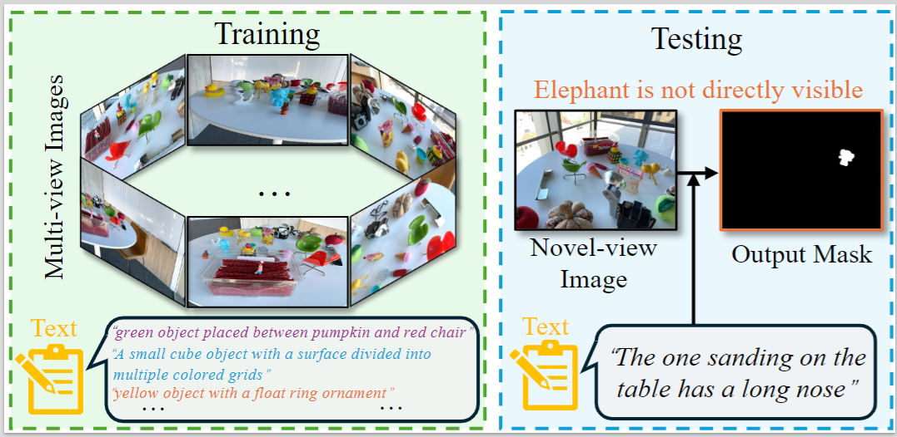
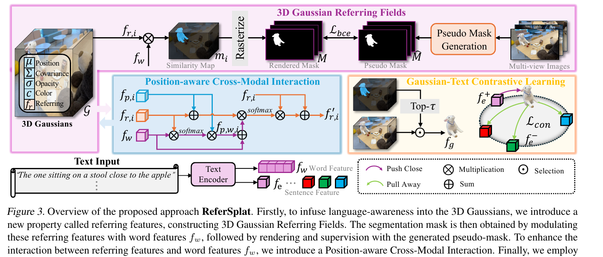
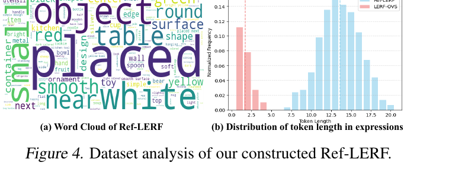
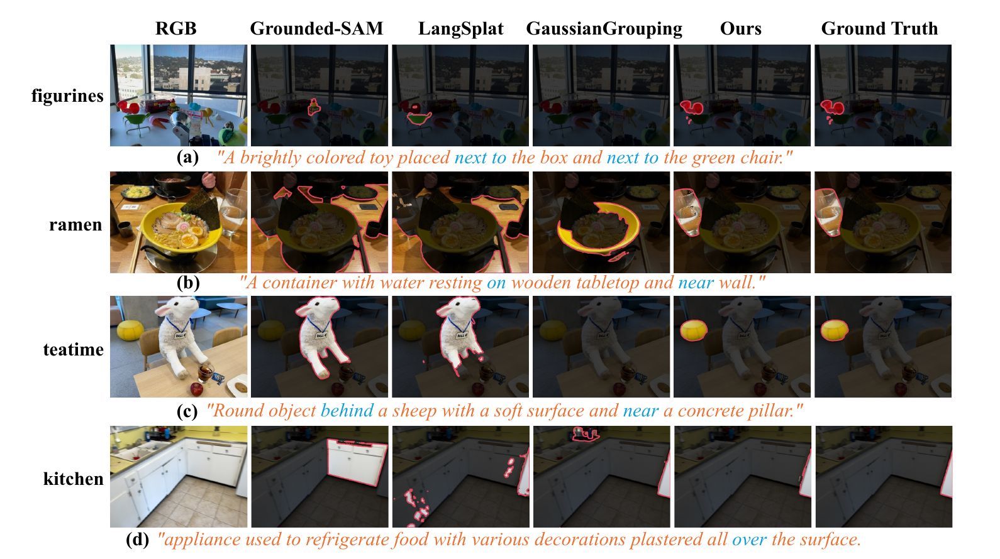

TL;DR: We introduce R3DGS — the task of segmenting objects in a 3D Gaussian scene from a natural-language referring expression — release the first dataset (Ref-LERF), and propose ReferSplat, which explicitly models 3D Gaussians with language in a spatially aware paradigm and reaches state-of-the-art on both R3DGS and 3D open-vocabulary segmentation.

We introduce Referring 3D Gaussian Splatting Segmentation (R3DGS), a new task that aims to segment target objects in a 3D Gaussian scene based on natural language descriptions, which often contain spatial relationships or object attributes. This task requires the model to identify newly described objects that may be occluded or not directly visible in a novel view, posing a significant challenge for 3D multi-modal understanding. Developing this capability is crucial for advancing embodied AI.
To support research in this area, we construct the first R3DGS dataset, Ref-LERF. Our analysis reveals that 3D multi-modal understanding and spatial relationship modeling are key challenges for R3DGS. To address these challenges, we propose ReferSplat, a framework that explicitly models 3D Gaussian points with natural language expressions in a spatially aware paradigm. ReferSplat achieves state-of-the-art performance on both the newly proposed R3DGS task and 3D open-vocabulary segmentation benchmarks. Dataset and code are available at github.com/heshuting555/ReferSplat.
Given a 3D Gaussian scene and a natural-language expression such as “the mug behind the laptop on the left”, R3DGS asks a model to return the 3D Gaussians that belong to the referred object. Unlike open-vocabulary 3D segmentation, the referring expression typically encodes spatial relationships and discriminative attributes, and the target may be occluded or not visible in any single view.
ReferSplat attaches a language-aware embedding to each 3D Gaussian and grounds the referring expression in a spatially aware paradigm, jointly reasoning about object semantics and inter-object spatial relations directly in the 3D Gaussian representation. This design allows ReferSplat to localize occluded targets and to disambiguate objects that differ only by their spatial context.

Figure 2. Overview of ReferSplat. We infuse language-awareness into 3D Gaussians via 3D Gaussian Referring Fields, and follow with a Position-aware Cross-Modal Interaction module that grounds the referring expression on the generated pseudo masks.
We construct Ref-LERF, the first dataset for Referring 3D Gaussian Splatting Segmentation. It extends LERF scenes with natural-language referring expressions and per-Gaussian object annotations, enabling evaluation of language-conditioned 3D segmentation under spatial reasoning.

Figure 4. Ref-LERF expressions are rich in spatial language (placed, near, next, behind, under) and considerably longer than the LERF-OVS expressions used in prior open-vocabulary 3D benchmarks.
ReferSplat establishes state-of-the-art results on the new R3DGS benchmark and also improves over prior work on standard 3D open-vocabulary segmentation. See the paper for full quantitative comparisons and ablations.

Figure 5. Qualitative R3DGS comparison on Ref-LERF. Given a natural-language expression with spatial cues (highlighted in blue), Grounded-SAM, LangSplat and GaussianGrouping struggle to localize the correct object, while ReferSplat closely matches the ground truth.
@inproceedings{he2025refersplat,
title = {ReferSplat: Referring Segmentation in 3D Gaussian Splatting},
author = {He, Shuting and Jie, Guangquan and Wang, Changshuo and Zhou, Yun and Hu, Shuming and Li, Guanbin and Ding, Henghui},
booktitle = {International Conference on Machine Learning (ICML)},
year = {2025}
}